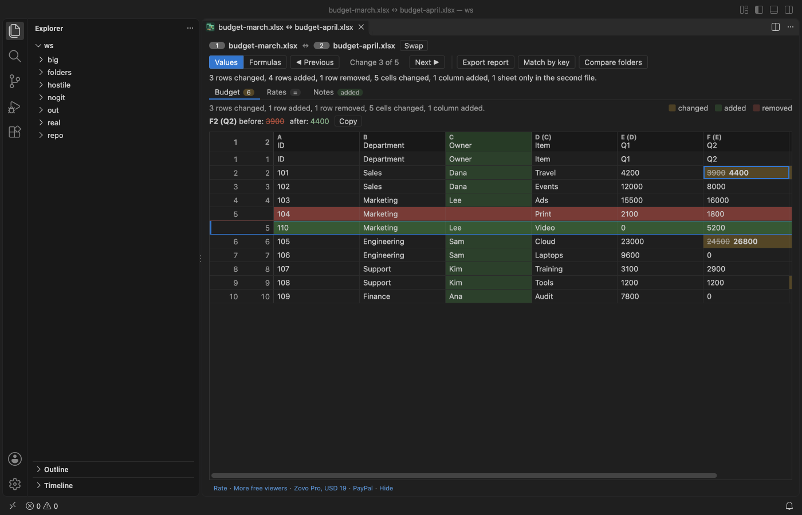

Open files in VS Code and Cursor / Tables and data
Compare two Excel sheets by a key column, not by row order
A diff that lines rows up by their order cannot follow a sheet that was sorted again. The rows that changed place show up as removed in one spot and added in another, or as changed rows that are really two different records. Excel Compare & XLSX Diff can match rows by the value of one or more key columns, such as an order ID, instead. Then yellow cells are real changes, green and red rows have a key that is only in one file, and rows that only changed place are marked moved. Match rows by key columns is part of Zovo Pro (USD 19 once), with 3 free tries on your computer.
Free, MIT license. Extension ID zovo.zovo-excel-compare, version 0.1.1. Needs VS Code 1.90.0 or newer.

Steps in VS Code
- Install Excel Compare & XLSX Diff from the Marketplace, or press Ctrl+P (Cmd+P on macOS) and run
ext install zovo.zovo-excel-compare. - Select the two files in the Explorer, right-click and pick Compare Selected Excel Files. The file you selected first is the older one. CSV and TSV files work too, also an .xlsx against a .csv.
- Open the tab of the sheet you want to match, then click Match by key in the toolbar.
- Pick the key column, for example ID or SKU. Tick more than one column when only the combination is unique, such as Order and Line. The list shows the columns that are in both files, with the header from the first row.
- Read the result. The summary says "Rows are matched by key columns." Changed cells are yellow with the old value struck through, rows with a new key are green, rows whose key is gone are red, and rows that only changed place are marked moved.
- Press N and P to step through the changes. Click Match by order to go back to the normal comparison.
Where Zovo Pro saves time
The free comparison lines rows up by their content, so an inserted or deleted row does not mark the rows below it as changed, and columns are matched by their header. When both files keep the same row order, that is all you need, and it costs nothing. Values or Formulas and Compare with Git HEAD are free as well.
Exports from a database or a CRM often come in a different order each time. Match rows by key columns pairs each row with the row that has the same key in the other file, wherever it is, and counts the rows changed, added, removed and moved. When a key value repeats, a note on the sheet says how many rows repeat a key, and each repeat is shown as removed or added. The other Pro tools are Export a diff report, which saves the key matched result as an XLSX, HTML or CSV file, and Compare two folders of workbooks.
With Match rows by key columns (Zovo Pro)
- Open a comparison and click Match by key, or run "Excel Compare: Match rows by key columns (Pro)" from the Command Palette.
- Pick one or more key columns. Escape does not use a try.
- A try counts when the matched sheet has at least one difference. Each sheet you match uses one try.
Match rows by key columns works 3 times on your computer before it asks for a license, and a try counts only when you get a result. Opening a file shows no popup and no countdown.
Zovo Pro costs USD 19 once. It is not a subscription, and it turns on the Pro tools in every Zovo extension, not only Excel Compare & XLSX Diff. After a card payment (Stripe) your license key shows on the next page. In VS Code, run "Zovo Pro: Enter Zovo Pro license key" from the Command Palette and paste it. The key is checked on your computer, with no network call. With GitHub Sponsors, pick the "$19 one time" tier, then run "Zovo Pro: I already paid: unlock with GitHub Sponsors" and sign in with the same GitHub account. With PayPal, send USD 19 with "Zovo Pro" in the note and the key comes by email within a day.
A team of 5: USD 59 once, by card or by PayPal. Every rule and every Pro tool is on the Zovo Pro page.
Steps in Cursor, Windsurf or VSCodium
- Open the Extensions view with Ctrl+Shift+X (Cmd+Shift+X on macOS).
- Search for
zovo.zovo-excel-compareand click Install. Cursor, Windsurf and VSCodium install from Open VSX, where it is published aszovo/zovo-excel-compare. - If your editor has no gallery, download the .vsix from the Open VSX page and run "Extensions: Install from VSIX...".
- Then use it the same way as in VS Code.
What Excel Compare & XLSX Diff handles
- A key of one column or of several columns together.
- Rows that only moved, and rows that moved and changed.
- Workbooks and CSV or TSV files, in any mix.
- Rows with an empty key, which are shown as removed or added.
What it does not do
- Rows are matched on one sheet at a time, the sheet on screen. Match each further sheet the same way.
- The key columns must be in both files. Key values match only when they are exactly equal, upper and lower case included.
- The first row is read as the header and is not matched as a key.
- A repeated key value is matched once. The repeats are shown as removed or added, with a note.
- Compare two folders of workbooks does not use keys. Open a pair to match it by key.
Other options
- daff. A free table diff tool and library. It can match rows by a key column you name and render the diff as HTML. It runs in a terminal or in code.
- csv-diff. A free Python tool that compares two CSV files by a key column and lists the added, removed and changed rows. CSV only.
- pandas.
pandas.mergeon the key column withhow="outer"andindicator=Trueshows the rows in one file only. Free, needs a script.
Install counts and Open VSX status were checked on 13 November 2026. Descriptions in quotes are the extensions' own.
Questions
Why does my Excel diff show almost every row as changed after a sort?
A sort moves most rows to a new position. A diff that follows the row order then pairs different records. Matching by a key column pairs the rows by their ID instead.
Can I use two columns as the key?
Yes. Tick both in the list. Rows match when the values in all key columns are the same.
What happens to rows with a duplicate ID?
The first row with that key is matched. Each repeat is shown as removed or added, and a note on the sheet says how many rows repeat a key in each file.
Does it work in Cursor or Windsurf?
Yes. Cursor, Windsurf and VSCodium install extensions from Open VSX. Search for the extension in their Extensions view and install it there.
More about Excel Compare & XLSX Diff
Read the Excel Compare & XLSX Diff page for every feature and setting, or the source code on GitHub.
Related guides
- Compare two Excel or CSV files in VS Code
- Compare two folders of Excel and CSV files, workbook by workbook
- Export the differences between two Excel files as a report
- Compare the formulas of two Excel workbooks
Zovo Pro and support
Zovo Pro: USD 19 once, every Zovo viewer. It turns on the Pro tools in this extension and in the other Zovo extensions you use. The free features stay free.
After a card payment your license key shows on the next page. Paste it with the command "Zovo Pro: Enter a key".
You can also support the work with no Pro:
Need your format supported?
Open a format request with a sample file, and I reply there whether it can be done. For USD 299 once, through this GitHub Sponsors tier, I add your file format or a missing feature to this extension, with tests, within 7 days.